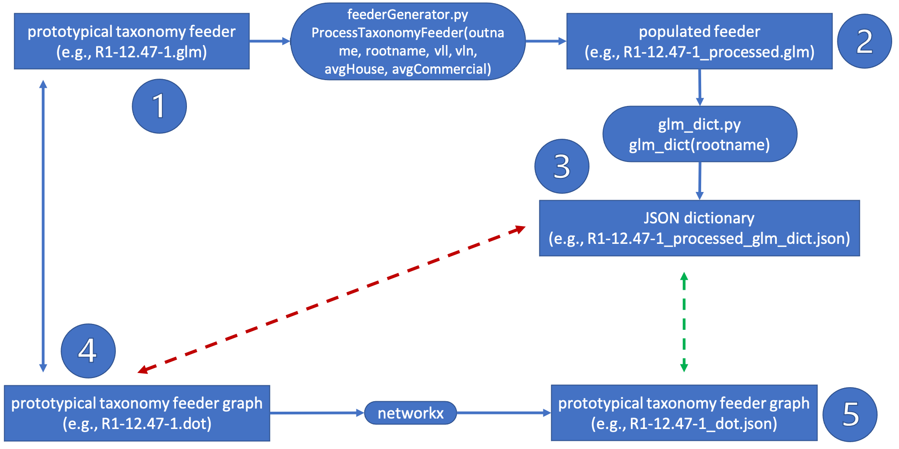
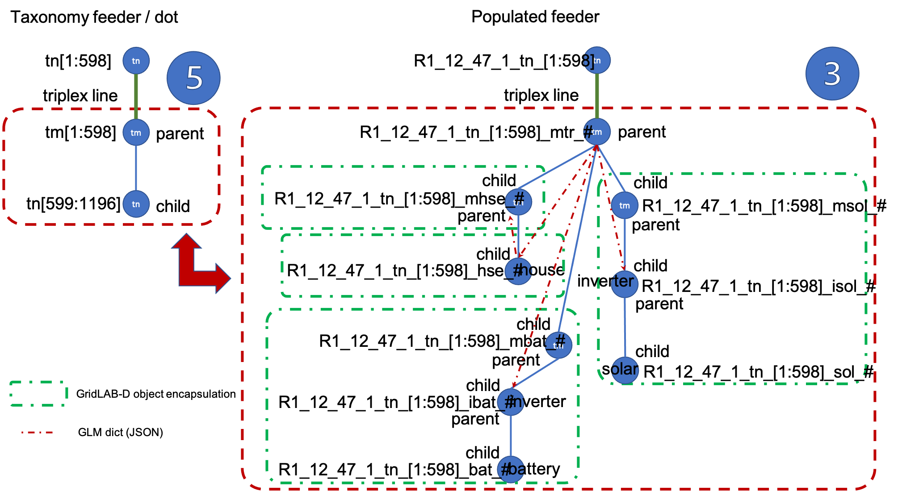

1. Prototypical Communication System (PCS)¶
To build an ns-3 PCS, the ns-3 code requires a configuration file in JSON format to provide the node names and locations together with the links between. The JSON configuration files follows the current format and structure provided by the networkx Version 2.5 Python module, e.g.:
object {5}
directed : false
multigraph : false
graph {0}
nodes [7089]
0 {3}
id : R1_12_47_1_tn_1
nclass : node
ndata {2}
x : 1258.9
y : 3153.5
[..........]
links [6491]
0 {4}
ename : line_tn_1_mtr_1
source : R1_12_47_1_tn_1
target : R1_12_47_1_tn_1_mtr_1
edata {3}
from : R1_12_47_1_tn_1
to : R1_12_47_1_tn_1_mtr_1
length : 0
[...........]
This configuration file is to describe the location of and links between all the houses and DERs in a populated feeder derived from a prototypical taxonomy feeder. The edge nodes are to be placed based on the node locations extracted from the prototypical feeder visualization/graphs in .dot format at GridLAB-D Taxonomy Feeder Graphs.
1.1. GridLAB-D Prototypical Taxonomy Feeder Graph VS GridLAB-D Populated Feeder¶
The .dot graph of the GridLAB-D Prototypical Taxonomy Feeder (element 4 in Fig. 1.1) places the nodes at certain positions, which have to be translated into location coordinates for the populated feeder houses and DERs in element 2 in Fig. 1.1. Element 2 in Fig. 1.1 has been obtained by populating the feeder using the populateFeeder function provided by tesp_support module to get a fully populated GLM model, after which certain objects are extracted in a JSON dictionary (element 3 in Fig. 1.1).
{kind=link}

Fig. 1.1 From graph to populated feeder dictionary¶
After converting the .dot graph into a JSON structure (element 5 in Fig. 1.1), the connection between the feeder population and their geographical placements (elements 3 and 5 in Fig. 1.1) is done according to Fig. 1.2.
{kind=link}

Fig. 1.2 Edge nodes connection to taxonomy feeder¶
Important
R1-25.00-1feeder, and later others, throws errors as one of the node had name ‘762’ rather than the correct ‘node762’, which lead to one id being empty in theanalyzeDOTfunction
Note
FIXED !!!!! (I think)
R3-12.47-2andGC-12.47-1feeders turn out to have no triplex nodes or meters, that istnortmIDs, which threw error becauseanalyzeDOTcannot returntnNodesandtmNodes
Note
Not fixed. Is it worth it?????